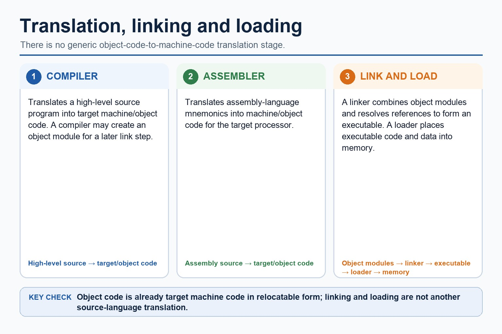
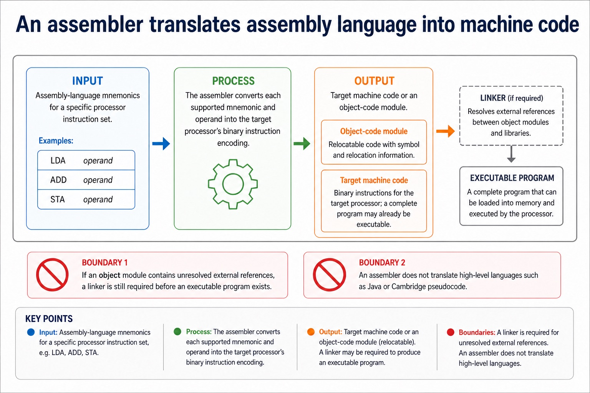

An assembler is needed to translate a processor-specific assembly-language program into machine code or object code. A compiler is needed to translate a whole high-level language program before execution, normally producing target/object code. An interpreter translates and executes a high-level language program statement by statement during execution, normally without producing a separate permanent object-code file.
Compiler advantages include faster repeated execution after translation, distribution without the source code and translation checks across the whole program. Disadvantages include a separate compilation step and an error list that may need several corrections before execution. Interpreter advantages include immediate statement-level feedback and convenient incremental testing. Disadvantages include repeated translation overhead, slower execution and needing the interpreter and usually the source program at run time.
A justified choice must connect the mechanism to the scenario: an interpreter can suit development and debugging; a compiler can suit repeated use or distribution; an assembler is required for assembly source. These are advantages and disadvantages of the translation approaches, not universal claims that one tool is always better.
Worked example: Choose tools across development and deployment
During development, an interpreter can execute each statement and stop near a fault, giving quick feedback. For final distribution, a compiler can translate the whole high-level program before execution and provide target/object or executable code without distributing the source. A processor-specific assembly routine requires an assembler because its mnemonic instructions must become the target processor's machine code.
Core syllabus practice
Assembler, compiler and interpreter choices: apply and assess
Targeted practice
1. Why is an assembler needed?
Show answer
It translates assembly-language mnemonics and operands into machine or object code for the target processor.
2. Give one compiler advantage and its mechanism.
Show answer
A compiled program can run repeatedly without translating the source each time because translation occurred before execution.
3. Give one compiler disadvantage.
Show answer
Compilation must complete before execution and the programmer may need to correct a list of reported errors.
4. Give one interpreter advantage and one disadvantage.
Show answer
It provides immediate statement-level feedback, but repeated translation can make execution slower and requires the interpreter/source at run time.
5. Which translator is required for assembly language?
Show answer
An assembler.
Exam-style question
6 marks
Compare a compiler and an interpreter using two advantages and two disadvantages, then justify the translator used for an assembly-language routine.
Show MS
Answer
Guidance
Marks
compiler translates the whole high-level program before execution and produces target/object code
Do not award vague claims such as 'compiler is faster' or 'interpreter is easier' without the mechanism and scenario.
1
compiler advantage linked to repeated execution or distribution without source
1
compiler disadvantage linked to separate translation or error-list workflow
1
interpreter translates/executes statements during execution and gives immediate feedback
1
interpreter disadvantage linked to repeated translation, slower execution or run-time dependency
1
assembler selected and justified for assembly-language-to-machine/object-code translation
1
Lesson 056 | 45 minutes | Paper 1 Section 5 | System software
Source code is written for humans. Machine code is what the processor runs.
Translator software converts programs from one language level to another.
Compilers, interpreters and assemblers all translate, but they do it at different levels and with different trade-offs.
The exam rewards accurate comparison, not "compiler makes code work".
Definecompiler, interpreter and assembler using precise vocabulary
Comparetranslation timing, output and error reporting
Choosea suitable translator for development, deployment or assembly code
Translation is not decoration. CPUs do not politely guess Python.
Why this matters
Scenario questions often contrast development with distribution. The best answer links translator behaviour to the scenario.
Common error
Do not call an interpreter a weak compiler. They are different translation approaches with different uses.
Warm-up hook
A processor receives PRINT("Hello"). Will it run that directly?
Click the best answer. Processors require instructions to be translated into an executable form.
Choose one. The processor executes machine code instructions.
Knowledge point 1
Translator software converts program code into another form
Source codeThe program as written by the programmer, usually in a high-level or assembly language.Object codeTranslated code produced by a compiler or assembler, often close to machine code.Machine codeBinary instructions that can be executed directly by the processor.TranslatorSystem software that converts code from one language level to another.
Translator software converts program code into another form

Translator software converts program code into another form: source-grounded visual explanation.
Lesson fact: A compiler translates high-level source into target machine or object code.
Lesson fact: An assembler translates assembly mnemonics into target machine or object code.
Lesson fact: A linker combines object modules and resolves references to form an executable.
Lesson fact: A loader places executable code and data into memory; it is not a generic object-to-machine translation stage.
Knowledge point 2
A compiler translates the whole high-level program before execution
InputHigh-level language source code.OutputObject code or executable code after translation.AdvantagesExecutable can run without source code; repeated execution may be faster after compilation.LimitationsErrors are often reported after compilation, so debugging may involve checking a list of errors.
A compiler translates the whole high-level program before execution
A compiler translates the whole high-level program before execution: source-grounded visual explanation.
Lesson fact: Input High-level language source code.
Lesson fact: Output Object code or executable code after translation.
Lesson fact: Advantages Executable can run without source code; repeated execution may be faster after compilation.
Lesson fact: Limitations Errors are often reported after compilation, so debugging may involve checking a list of errors.
Knowledge point 3
An interpreter translates and executes statements as the program runs
InputHigh-level language source code.OutputNo separate permanent object code is normally produced.AdvantagesUseful during development because errors can be found statement by statement.LimitationsProgram may run more slowly because translation happens during execution; source code is needed.
An interpreter translates and executes statements as the program runs
An interpreter translates and executes statements as the program runs: source-grounded visual explanation.
Lesson fact: Input High-level language source code.
Lesson fact: Output No separate permanent object code is normally produced.
Lesson fact: Advantages Useful during development because errors can be found statement by statement.
Lesson fact: Limitations Program may run more slowly because translation happens during execution; source code is needed.
Knowledge point 4
An assembler translates assembly language into machine code
InputAssembly language mnemonics such as LDA, ADD or STA.OutputMachine code/object code that the processor can execute.PurposeAllows low-level programming using mnemonic instructions instead of raw binary.BoundaryIt does not translate high-level languages such as Python, Java or pseudocode.
An assembler translates assembly language into machine code

An assembler translates assembly language into machine code: source-grounded visual explanation.
Lesson fact: An assembler translates assembly-language mnemonics into machine code or an object-code module.
Lesson fact: Machine code uses the instruction set and binary encodings of the target processor.
Lesson fact: An object module may still need a linker to combine modules and resolve external library references before an executable can be produced.
Lesson fact: An assembler does not translate high-level languages such as Java or Cambridge pseudocode.
Knowledge point 5
Comparison: same goal, different route
Translator
Input
Output / execution behaviour
Typical use
Compiler
High-level source code
Produces object/executable code before the program is run.
Translates and executes statement by statement; normally no separate object code.
Development, testing, learning and rapid debugging.
Assembler
Assembly language
Converts mnemonics into machine code/object code.
Low-level code for specific processor instructions.
Comparison: same goal, different route
Comparison: same goal, different route: source-grounded visual explanation.
Lesson fact: A compiler translates a whole high-level program before execution and produces target or object code; a linked executable can run repeatedly without the source.
Lesson fact: An interpreter translates and executes high-level statements during execution and normally produces no separate permanent object-code file.
Lesson fact: An assembler translates assembly-language mnemonics into target machine code or an object module for a specific processor instruction set.
Lesson fact: If an assembler or compiler produces object modules, a linker may still be required before there is an executable program.
Lesson fact: Choose the translator from the input language and the development or deployment need; do not claim that every assembler output is immediately executable.
Interactive tool
Translator selector
Select a scenario and classify the most suitable translator.
Worked examples
Choose the translator, then justify the trade-off
Practice
Instant-check questions
Type a short answer, then check. Reveal the expected wording only after trying.
Mistake debugging
Fix the almost-right answers
Exam-style questions
Answer first, then reveal the Cambridge-style mark scheme
These are original Cambridge-style questions. The mark schemes include strict wording notes and follow-through guidance.
Summary
Translator memory map
CompilerWhole high-level program before execution, produces object/executable code.
InterpreterTranslates and executes high-level code statement by statement.
AssemblerAssembly language mnemonics into machine code.
DevelopmentInterpreter can help with line-by-line testing.
DeploymentCompiler can distribute executable code without source code.
Exam ruleAlways name input, output and scenario consequence.
Homework
Clear output, not vague revision
Task 1: Three translator flashcardsFor compiler, interpreter and assembler, write input, output, one advantage and one limitation.Task 2: Scenario answerWrite a 6-mark answer comparing an interpreter during development with a compiler for distributing a finished program.Task 3: Precision checkUnderline the exact words source code, object code, machine code, statement by statement and assembly language where relevant.